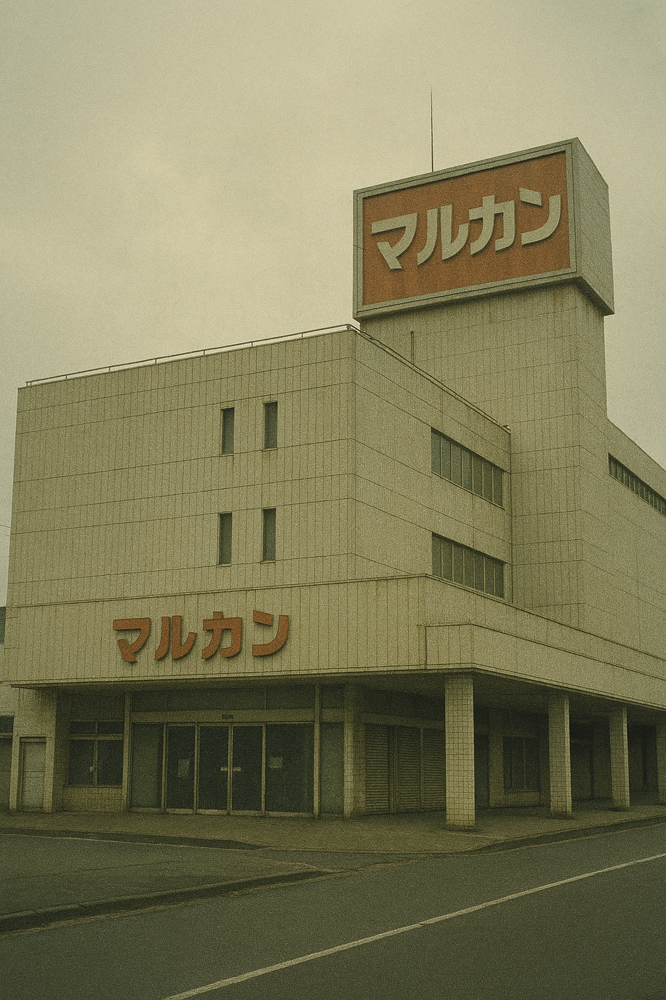
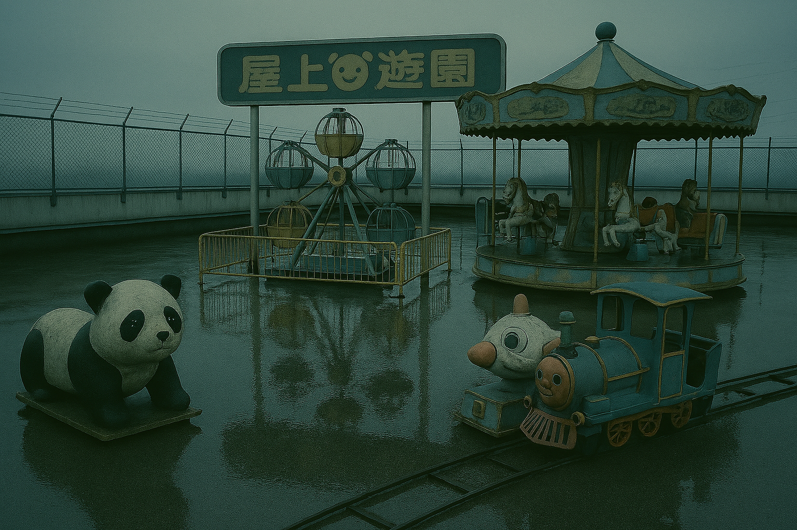
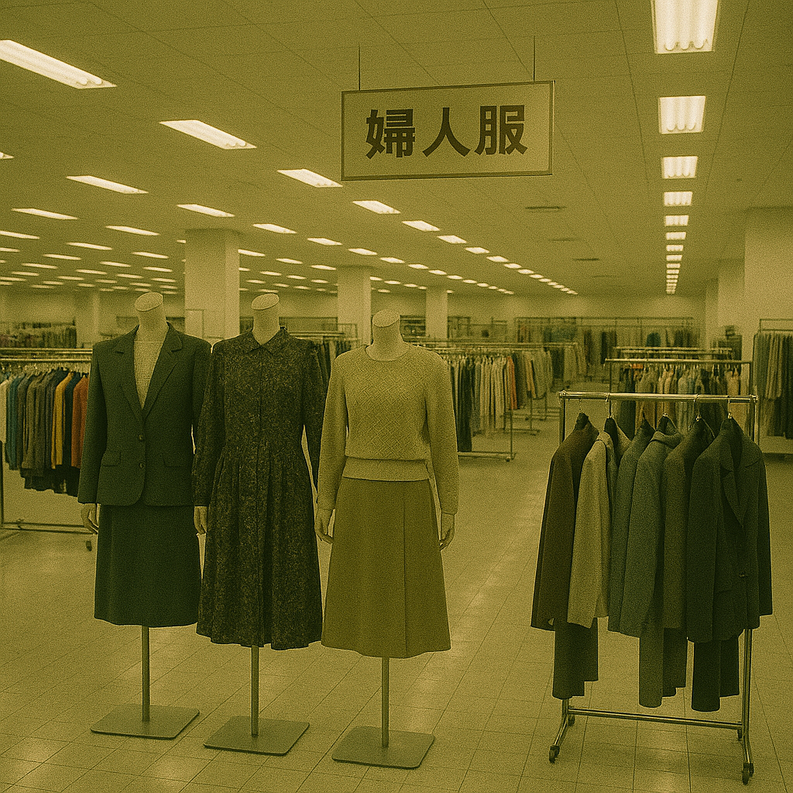
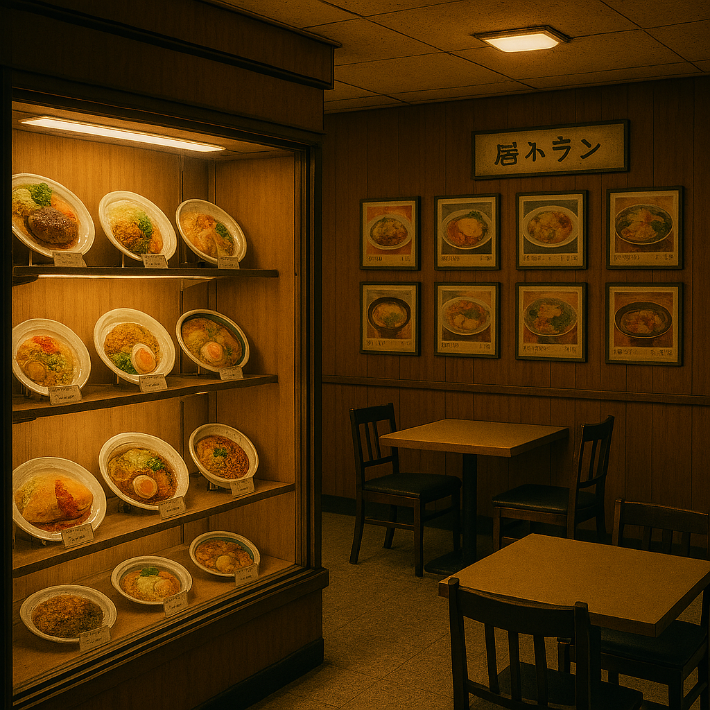
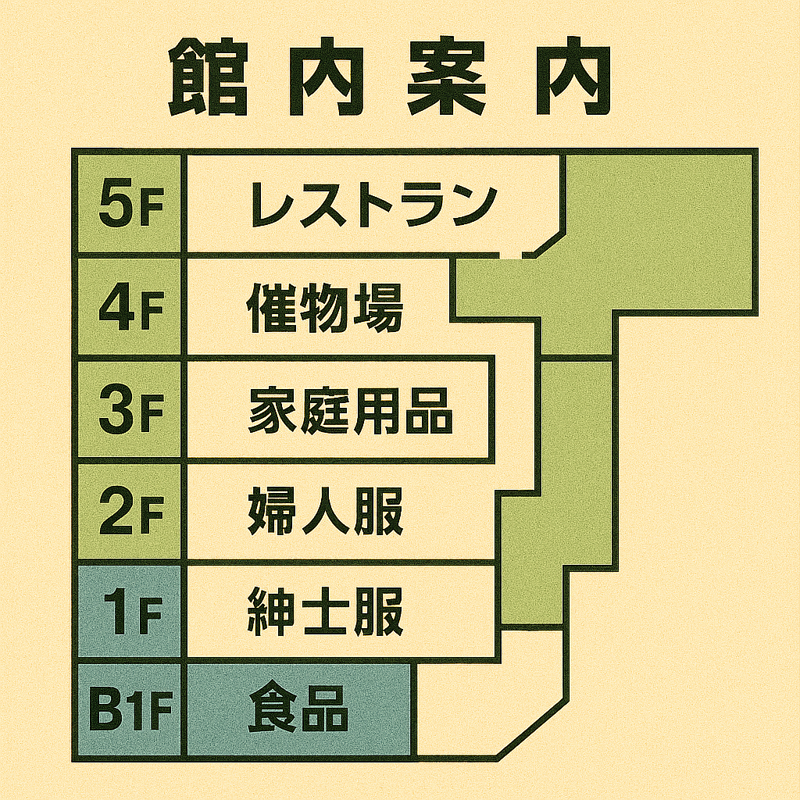

営業のご案内
白栄デパート公式サイト
白栄デパートは、皆様の心に残る「懐かしさ」とともに営業しております。

フロア案内
- B2F 忘れ物センター
- 1F 化粧品・雑貨
- 3F 婦人服コーナー
- 5F 玩具・子ども用品
- 6F レストラン街
- R 屋上遊園地
屋上遊園地
R階
かつて多くの子どもたちで賑わった屋上遊園地。現在は静かに佇んでいます。

婦人服コーナー
3F
昭和から続く落ち着いた雰囲気の売り場です。

レストラン街
6F
懐かしい食品サンプルが並ぶ、どこかほっとする空間です。

館内マップ
Floor Map
